Snapchat App Flow Redesign
a UX case study
PLATFORM
iOS
TOOLS
Adobe XD, Adobe Photoshop
ROLES
I worked on user research, ideation, user flow, and visuals.
DURATION
August 31 — September 5, 2020
The Challenge
Snapchat is a social media messaging app that, as of 2020, has 238 million daily active users worldwide. One of the features it's best known for is that pictures and messages exchanged on the app are usually only available for a short time before they become inaccessible to their recipients.
How might we improve the experience of Snapchat users utilizing the text chat feature?
I've been a somewhat dedicated user of Snapchat since 2013. Recently, I've been using Snapchat daily to stay in touch with friends during the pandemic, primarily using its chat feature to send and receive images, videos, and text. Although the app has a variety of engaging features and has had many different changes and innovations emerge over the years, it is far from perfect. More than once, I've forgotten to save important text chat messages before they're automatically deleted and struggled to find group chats or conversations I've had previously. I wanted to facilitate a more engaging and seamless experience when it comes to staying connected through the chat feature.
Disclaimer: I do not work for Snapchat and am in no way affiliated with Snapchat. The views from this case study are strictly my own and are not reflective of Snapchat.
The Process
For this redesign project, I utilized the Design Thinking process, which follows an overall flow of understanding, exploring and discovering, and materializing. The six phases of empathizing, defining, ideating, prototyping, testing, and implementing make up that larger flow. Design thinking is a non-linear process that is user focused and aims to generate creative solutions to social or design problems. It's a great tool to use to address issues at a strategic level, and by incorporating this process into my work, it has helped me process and visualize the complex variables that arise within my projects. For the purpose of this assignment, I have only worked through this process up until the Prototype stage.
Empathize
App Analysis
I began by mapping out the user flow of Snapchat's text chat feature to better understand its strengths and weaknesses. This first user flow shows us how users start a new chat. Open images in a new tab to view them at a larger scale.
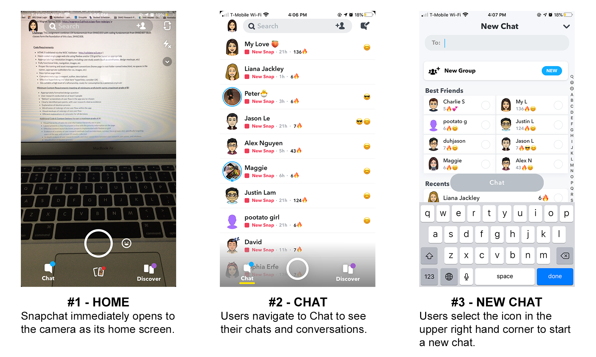 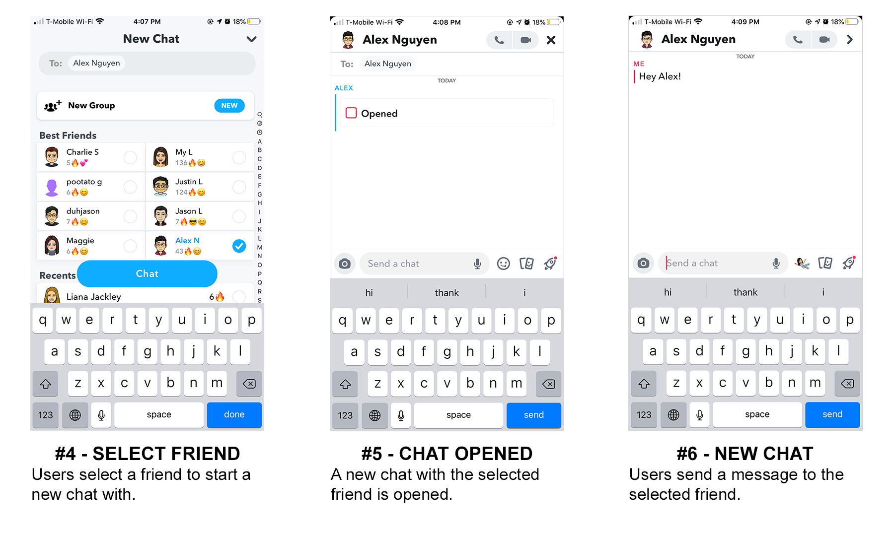The second following user flow continues from the last one and demonstrates how users can save messages within the chat.
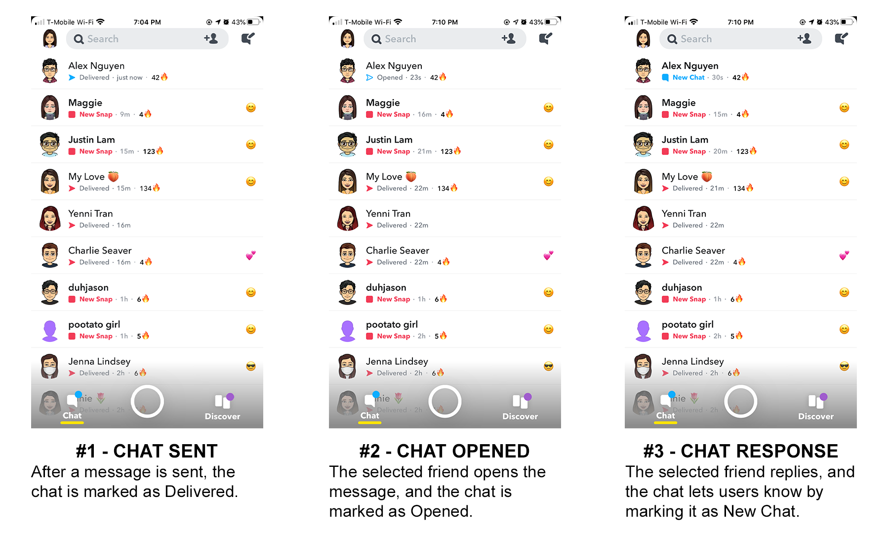 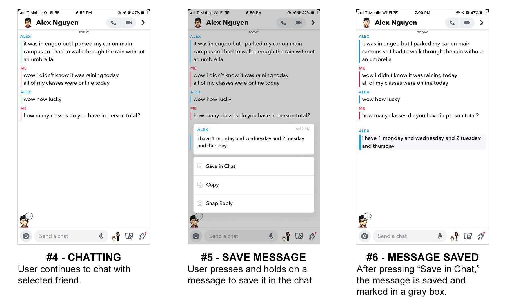 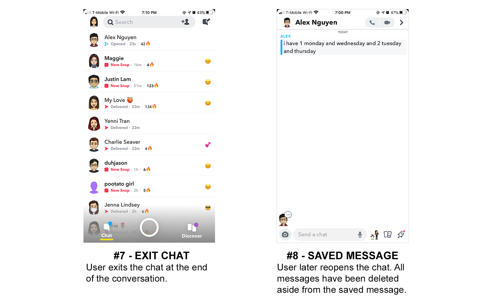Messages can also be unsaved the same way: the user can press and hold on the saved message and press "Unsave in Chat" to unsave the message.
User Research
Before I began my redesign project, I conducted a Google Forms survey with 31 participants to get a better understanding of who I'm designing for. What does a typical Snapchat user look like? What are their reasons for using Snapchat? What feature is most important to them? My participants were all students of varying ages, years, and majors at James Madison University who use Snapchat or had used Snapchat before.
87.1% of them used Snapchat daily.
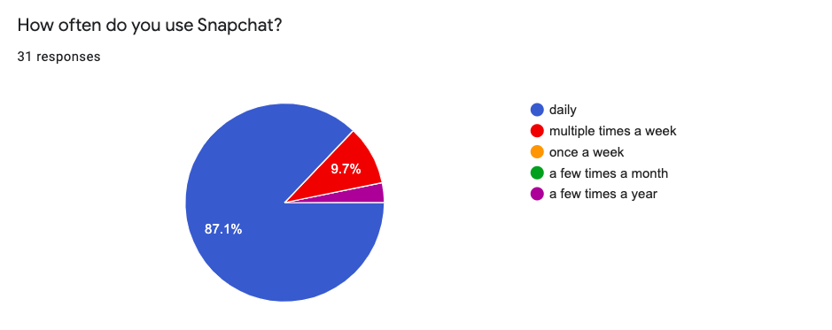71% of them reported that sending and receiving Snaps is the most important feature to them.
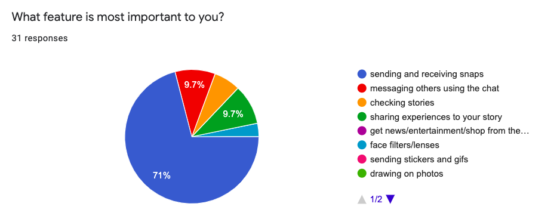74.2% of them reported that they have had difficulty locating specific chat messages.
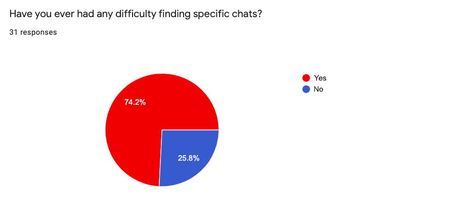They were asked to elaborate in the next survey question, which was a text entry box, and many users complained that they would forget to save previous conversations, couldn't easily find older saved messages, or simply disliked that they had to save chats or else they got deleted. One user said, "I often save funny memes in our conversations using the Save in Chat feature, but I rarely ever look back at them, especially when it gets pushed down into my older conversations."
Define the Problem
Pain Point #1: Users have difficulty remembering to save previous messages in conversations.
I wasn't surprised to find that the users also had similar experiences to me when it came to forgetting to save messages. Saving messages isn't something users often have to do with other messaging apps, so it can feel unnnatural to get into the habit of saving messages on Snapchat. When users forget to save a message and open the conversation later to find that they don't remember what they last said or can't find important information that they needed to keep handy, it can take away from the experience and make text chatting on Snapchat less reliable than using another application to chat.
Pain Point #2: Users have difficulty finding older saved messages.
As stated previously, 74.2% of users had difficulty locating specific chat messages. This can be especially frustrating for users who use the text chat feature often. One user even suggested that the text chat should have a search bar, similar to iOS Messages where you can search for parts of any conversation.
Ideate
Synthesize
I refined my findings into a couple key points:
- Make it so users won't forget to save messages
- Help users locate specific saved messages more easily
Information Architecture
I mapped out Snapchat's current information architecture to get a better understanding of how a redesign could work.
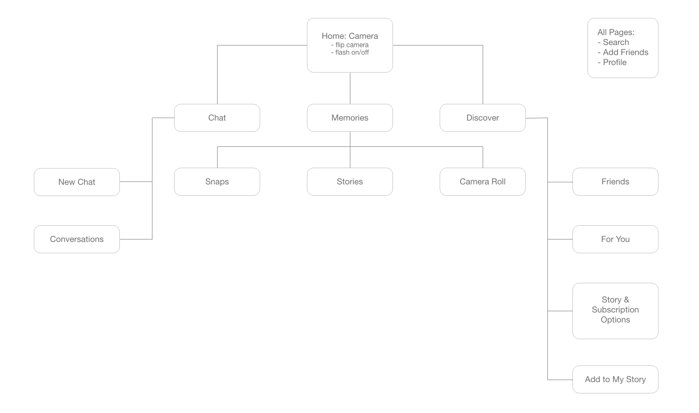As my focus is to improving the experience of users utilizing the text chat feature, redesigning the IA was not necessary. However, being able to visualize it in a site map helped me to understand the application better as a whole and made me consider how many parts of the IA go unused (maybe an idea for another redesign?).
Wireframes

I considered the best ways to make it so users wouldn't forget to save messages and help them locate specific saved messages more easily, creating wireframes in Adobe XD to illustrate a redesigned user flow. Please excuse the AssistiveTouch in the corner of the gif. 😓
- User navigates from Home page to Chat page.
- User toggles Auto-Save Messages on.
- User presses and holds on a message from friend.
- User pins the message.
- User presses and holds on the pinnned message.
- User selects "Go to in Chat" to navigate straight to the pinned message in the chat.
Pain Point #1: Users have difficulty remembering to save previous messages in conversations.
Solution: In every individual chat conversation, users have the option to toggle Auto-Save Messages on and off. When this is toggled on, all new messages are automatically saved. However, as you can see, users still have the option to unsave specific messages by pressing and holding on them. As chat conversations involve more than one person, anyone in the chat would be able to toggle Auto-Save Messages on and off, and it will change for everyone in the chat. When Auto-Save Messages is toggled off, the chat works just as Snapchat has it normally: messages disappear immediately after it is read by the recipient, unless manually saved. Preexisting messages would be unaffected by toggling Auto-Save Messages on and off.
Pain Point #2: Users have difficulty finding older saved messages.
Solution: Users also have the ability to pin messages to the top of the chat. This is done by pressing and holding on a specific message and selecting "Pin Message." Pinned messages will always remain at the top of the chat until unpinned by member of the chat. Users can also navigate directly to where the pinned message is originally located by pressing and holding on the pinned chat and selecting "Go to in Chat." I have also included the static wireframes down below. Read them left to right and top to bottom, and open images in a new tab to view them at a larger scale.
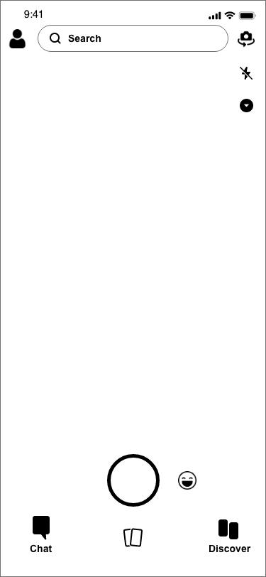 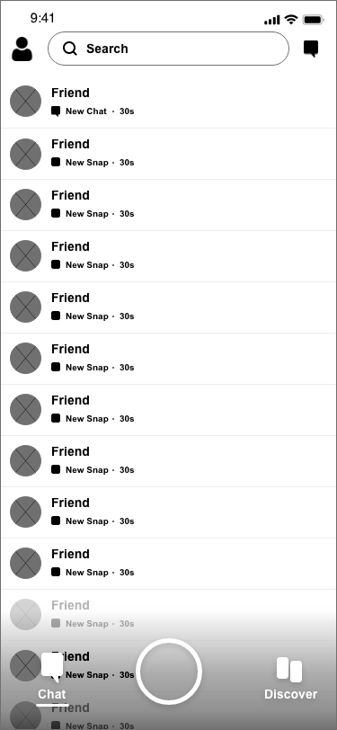 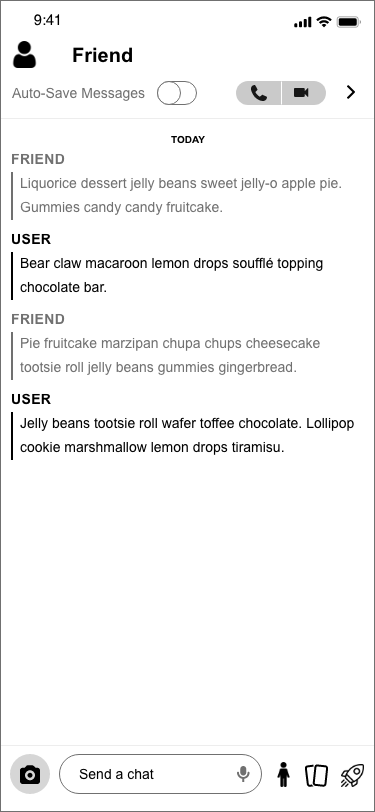 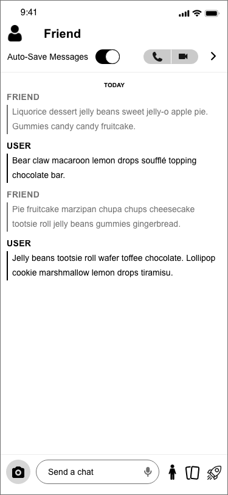 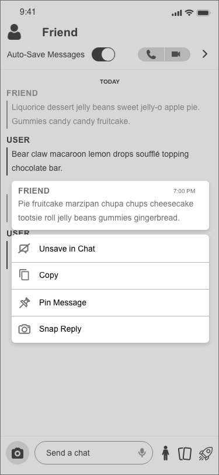 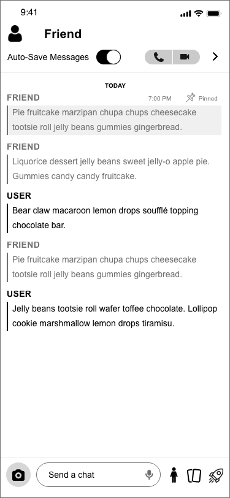 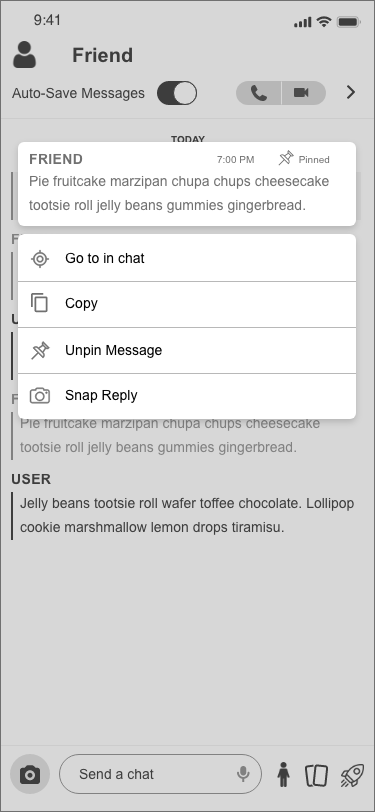 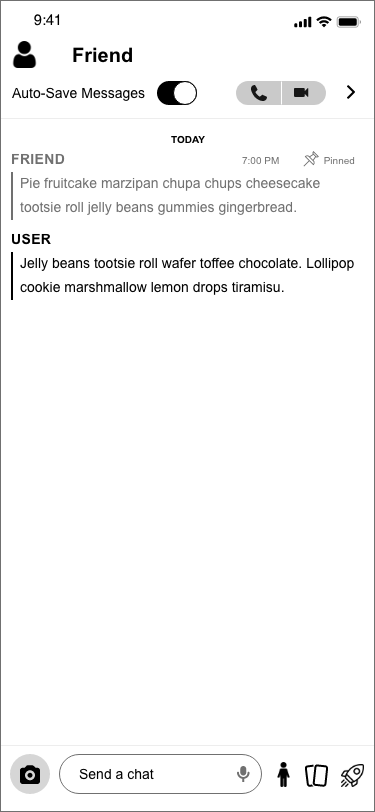Visual Mockups
Once I had decided on an effective user flow and created my wireframes, I was able to design some visual mockups in Adobe XD and Photoshop. Read them left to right, top to bottom.
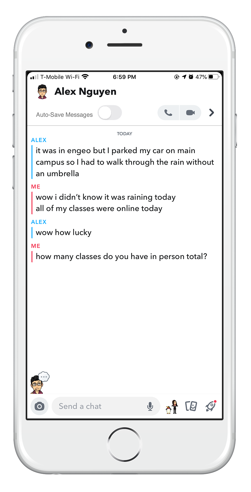 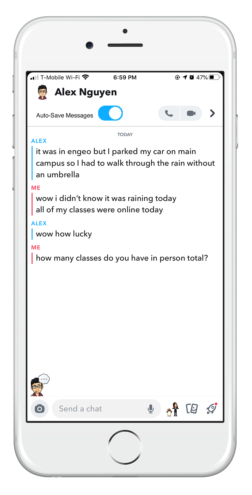 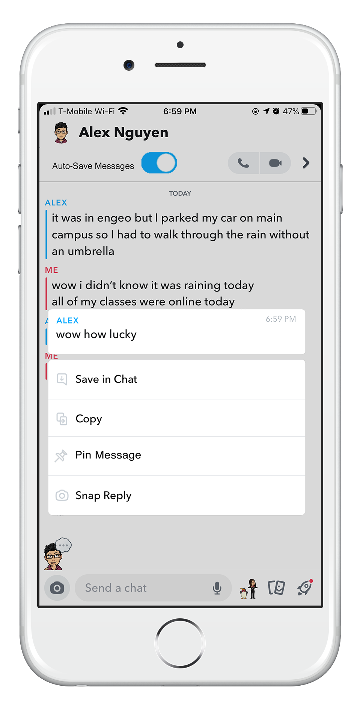 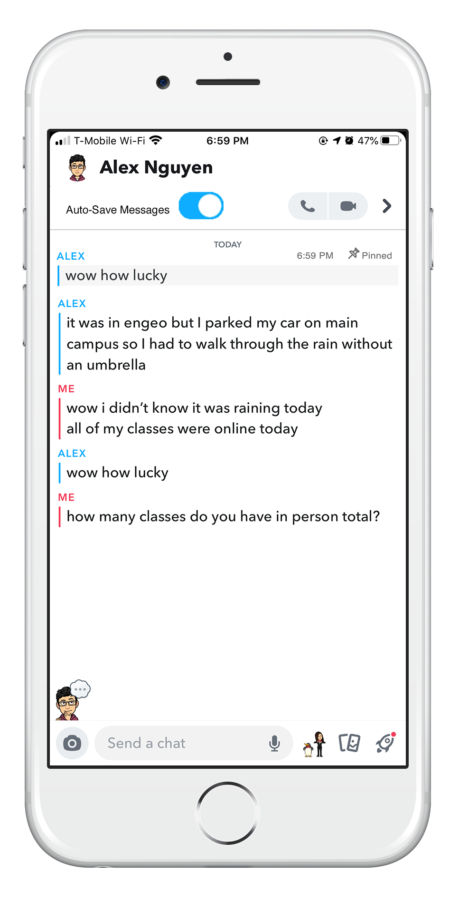 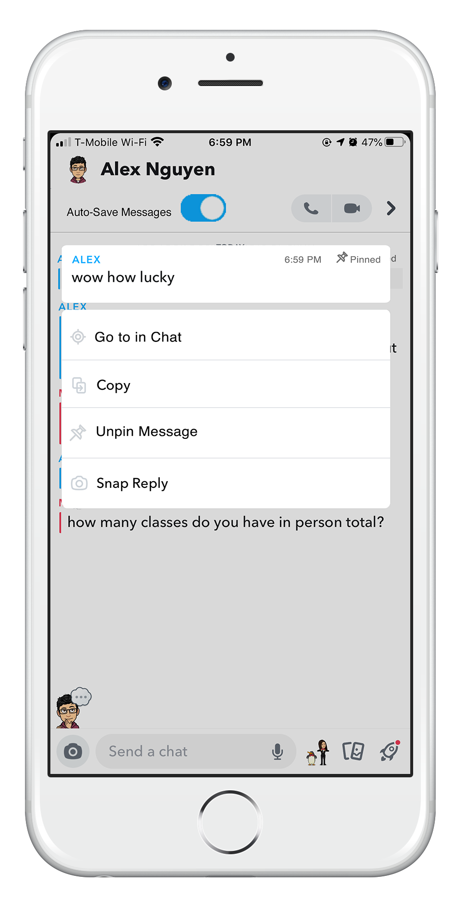 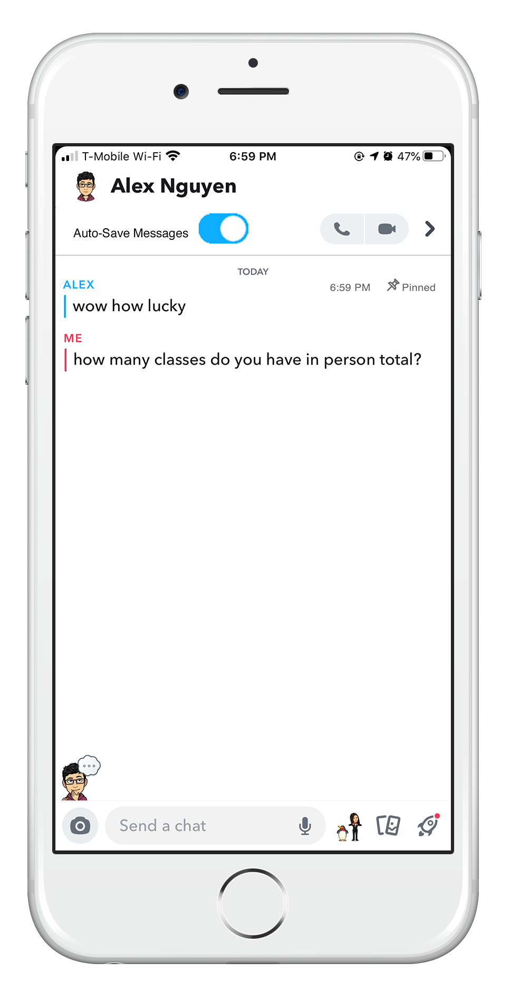Users no longer have to worry about forgetting to save message, when they can just turn on Auto-Save Messages and have their messages save automatically. Also, they can pin any important messages and easily find them later on at the top of their chats.
Conclusion
Going into this project, I knew that this would be the perfect opportunity to further hone my design skills and get some more experience working in Adobe XD. As I worked through each step of the process, I realized that this would be a more challenging project than I had expected, but I was able to learn all the things I set out to learn in order to deliver this project and so much more. I learned what works and what doesn't, and I was able to pick up some new information along the way. As I've completed working through the ideation phase, I would love to eventually create a prototype of my redesign, test it, and iterate based on my results. For now, thank you for reading through my case study and walking through a new learning experience with me! Don't hesitate to reach out with any feedback, questions, or comments.